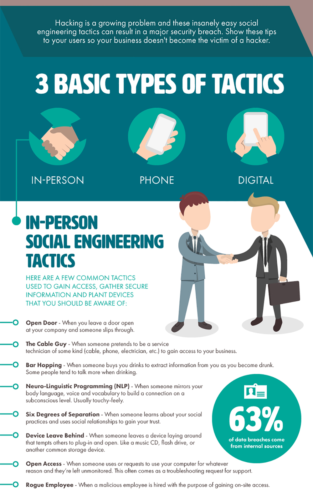

Cybersecurity Awareness Poster
This poster highlights key signs of Baiting and Typo Squatting attacks and tips for avoiding them.

Watch this short video explaining Baiting and Typo Squatting and how to stay safe online.
This poster highlights key signs of Baiting and Typo Squatting attacks and tips for avoiding them.
